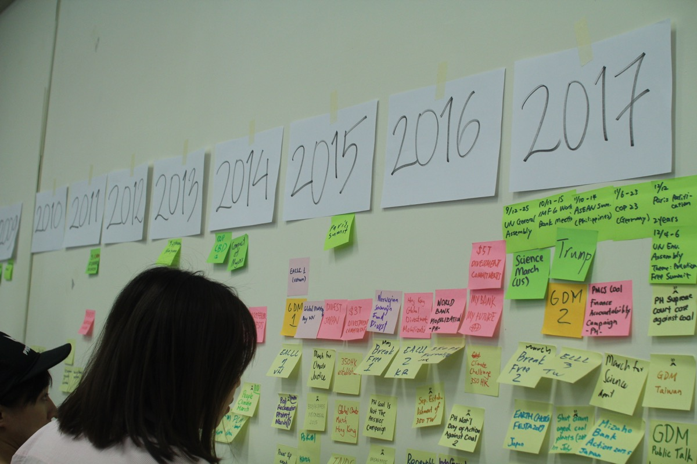

We can change and build
the climate story together.
From ideas to action,
starting with young voices.
In the face of the climate crisis,
we’re young people taking action..
GEYK is a youth-led nonprofit working toward a sustainable future. Since 2014, we’ve connected climate action in daily life with policy and linked local communities with the global movement.
Learn more about GEYK ↗How we make change

Climate action across borders
COP · International solidarity · Youth networks
Explore activities ↗Change starts in everyday life
Climate marches · Urban farming · Biodiversity
Explore activities ↗Learning the language of climate together
Seminars · Newsletters · Skills building
Explore activities ↗Our Record of Change
Explore GEYK activities and press coverage by topic, team, or year.
GEYK in the Press
View allLatest from GEYK
Turn your concern for the climate
into action.
Your interest can help shape what we do next.
We’re looking forward to welcoming new members.
GEYK Cohort 25
New Member Recruitment
Application period 2026.08.11 – 08.21
Check GEYK’s official Instagram or Facebook for new announcements.
View recruitment details ↗Before You Join
What kinds of activities can I take part in?
The COP Team studies international climate negotiations and plans events that bring youth voices into the conversation. The Climate Emotions Team looks at how climate anxiety affects everyday life, while the EMU Newsletter Team translates international climate news and shares it with readers. The Urban Farming Team tends a garden, and the Biodiversity Team hosts youth forums to explore ways to protect nature. Check each recruitment notice to see which teams are taking new members.
Do I need a climate or environmental studies background?
We welcome anyone who cares about climate change, whatever you study or do for work! See the recruitment notice for detailed eligibility requirements.
When is the next recruitment period?
We usually recruit in February and August, with announcements posted first on GEYK’s official Instagram @geykkorea. The timing may vary depending on GEYK’s schedule.